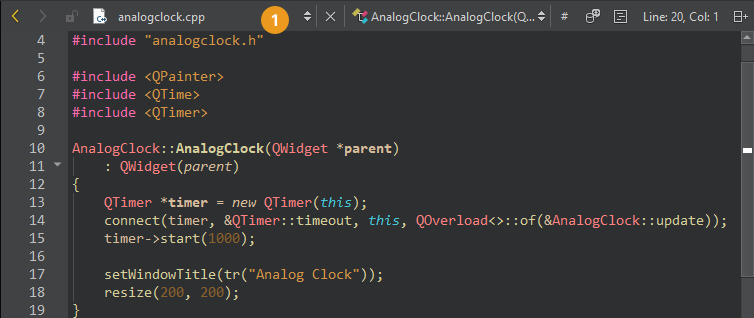

Move between files
The editor toolbar shows the name of the file that is currently open (1) in the editor.

Use the locator, sidebar views, Window menu items, keyboard shortcuts, or editor toolbar to move between files.
Locate files
Activate the locator to find files in the local file system or on connected devices. By default, the locator shows open documents and all files from all projects. The file system filter (f) shows all files in the same folder as the currently open file, and you can navigate the file system from there. Also, you can switch to another device root.
For example, to open a QML file called HelloWorld.qml in the currently open project using the locator:
- Press Ctrl+K to activate the locator.
- Start typing the filename.

- Use the arrow keys to move to the filename in the list and press Enter.
The file opens in the editor.
- To move to a line in the file, enter the line number in the locator.
Filters locating files also accept paths, such as tools/*main.cpp. If the path to a file is very long, it might not fit into the locator window. To view the full path, press Alt when the filename is selected or drag the right edge of the locator to make it wider.
If the locator does not find some files, see Specify project contents for how to make them known to the locator.
Locate files from global file system index
You can install tools such as Spotlight, Locate, or Everything and use them to locate files from a global file system index. Use the md locator filter to locate the files.
To use the sorting from the selected tool instead of from Qt Creator, deselect the Sort results check box in the md locator filter configuration.

Browse location history
To browse backward or forward through your location history, click  (Go Back) and
(Go Back) and  (Go Forward) on the editor toolbar.
(Go Forward) on the editor toolbar.
To return to the last location where you made a change, go to Window > Go to Last Edit.
Navigate with the keyboard
Use keyboard shortcuts:
- To quickly move between currently open files, press Ctrl+Tab.
- To move forward in the location history, press Alt+Right (Cmd+Opt+Right on macOS).
- To move backward, press Alt+Left (Cmd+Opt+Left on macOS). For example, after you use the Locator to jump to a symbol in the same file, press Alt+Left to jump back to your original location in that file.
See also How To: Edit Code, Edit Mode, Navigate with locator, File System, and Projects.